البيع اليومي
طريقتان للبيع: فاتورة لكل عملية، أو نقطة بيع سريعة بالباركود للكاشير. وكل بيع يُقيَّد في الحسابات وحده.
- فاتورة بيع
- نقطة البيع (الكاشير)
- بيع شيء ليس له صنف
- عرض سعر وطلب بيع
- الخصم والعروض الترويجية
- قوائم الأسعار: أسعار الجملة والموزع
- بيع بالدولار: أسعار الأصناف بالدولار
- نقاط الولاء وبطاقات الهدايا
- سقف الدين وتاريخ الاستحقاق
- الفوترة المجدولة: فواتير أو كشوف حساب كل أسبوع أو كل شهر
- الموافقات
- تعديل فاتورة بعد حفظها
- نسخ فاتورة
- إلغاء فاتورة
- إضافة زبون أو مورد
- تعديل زبون أو مورد
- حذف زبون أو مورد أو أرشفته
- مرتجع
- إشعار دائن أو مدين
- دين بمبلغ، بلا أصناف
- قبض من زبون
- رصيد سابق مع زبون أو مورد
- بلا دفتر فواتير
- مبيعات يوم معيّن: الحركة اليومية
- المطعم: الطاولات والطلبات والمطبخ
فاتورة بيع
- من المبيعات اختر فاتورة بيع جديدة، أو اضغط Ctrl + K واكتب «فاتورة بيع».
الشاشة كالفاتورة الورقية: في الأعلى ثلاثة أعمدة مختصرة، كل خانة واسمها بجانبها (التاريخ والاستحقاق وطريقة الدفع | الإجمالي بخط كبير والتسعيرة والزبون | العملة وسعر الصرف وخصم)، ثم جدول الأسطر مرقّماً بعرض الشاشة كلها، ثم المندوب والملاحظة، وفي الأسفل المجموع (والصافي بعد الخصم) وزر حفظ. فاتورة الشراء بالترتيب نفسه. نافذة جديدة بجانب العنوان يفتح فاتورة ثانية في نافذة وحدها، فيها الفاتورة فقط بلا القائمة الجانبية، تحرّكها وتكبّرها وتصغّرها وتنزلها إلى شريط المهام وتغلقها، وافتح منها ما شئت، وتبقى الأولى كما هي.
- الفاتورة لا تضيع قبل الحفظ: ما تكتبه يُحفظ على هذا الجهاز أولاً بأول. اذهب إلى ملخص اليوم أو نقطة البيع ثم ارجع إلى فاتورة بيع جديدة فتجدها كما تركتها، حتى بعد إغلاق البرنامج. تُحذف من هنا حين تحفظها.
- أكثر من فاتورة مفتوحة: فوق الفاتورة تظهر الفواتير غير المحفوظة، كل واحدة باسم زبونها وعدد أسطرها ومجموعها. زبون تأخّر؟ اضغط + فاتورة أخرى وخدّم الذي بعده، ثم اضغط على فاتورة الأول فتكمل منها. علامة × تغلق فاتورة دون حفظ (يسأل قبل حذف أسطرها).
- الزبون: اتركه فارغاً (نقدي) لبيع مدفوع الآن، أو اكتب أول اسمه واختره من القائمة التي تظهر. زبون ليس في القائمة؟ اكتب اسمه كاملاً فيظهر تحته «ليس في القائمة: يُضاف زبوناً جديداً عند الحفظ» (لمن له صلاحية العملاء). مع زبون اختر طريقة الدفع (تبدأ بما اختاره المحل في بداية الفاتورة الجديدة): على الحساب تُسجَّل ديناً عليه، ونقدي قبضت ثمنها الآن ويبقى اسمه عليها، أو شام كاش أو غيرها من طرق الدفع فتدخل الفاتورة كلها حسابها. دفع جزءاً منها أو أكثر منها؟ اكتب ما قبضته في المدفوع الآن: الأقل يبقى باقيه على حسابه. الأكثر يسألك تحتها عن الزيادة: رجّعتها له باقياً (أعطاك ورقة أكبر وأرجعت له الفرق، فلا يُسجَّل إلا ثمن الفاتورة)، أو تبقى بحسابه (دفعة على حسابه) فتسدّد فواتيره المفتوحة الأقدم أولاً ثم تبقى له. لا تُحفظ الفاتورة حتى تختار. فارغة = قبضت الفاتورة كلها. زيادة سُجّلت على حسابه خطأً؟ ألغِ سندها «زيادة على INV-…» (كيف)، والفاتورة تبقى مدفوعة. على الجوال: رجّعتها باقي أو تبقى بحسابه. فاتورة بالدولار: اكتبه بالدولار؛ مجموعها كما يظهر يدفعها كلها بلا قرش باقٍ، والزيادة تسدّد فواتيره بالدولار بسعر صرف هذه الفاتورة. فاتورة تنتظر الموافقة تأخذ في المدفوع الآن حتى مبلغها فقط: سجّل الزيادة سند قبض بعد الموافقة.
- في كل سطر اكتب الرمز (رمز الصنف أو باركوده) أو اكتب في الصنف أي جزء من اسمه أو رمزه (مثل «charger» أو «800») فتظهر قائمة بكل ما يطابقه مع رمزه وما بقي منه وسعره بـالتسعيرة المختارة، فتقارن نسخ القطعة الواحدة (أصلي، تجاري، صيني) قبل أن تختار. اكتب رقم القطعة في اسم كل نسخة أو رمزها لتظهر كلها معاً. القائمة تمتد حتى أسفل الشاشة فتقارن عشرات الأصناف وأسعارها معاً (اكتب «بطارية» فتظهر كل البطاريات). الاسم الطويل يظهر كاملاً في السطر على أكثر من سطر، فاكتب الوصف في اسم الصنف نفسه: «بطارية ليثيوم فيليستي FLA 200 mAh». اختر بالأسهم وEnter أو بالنقر، فينتقل المؤشر إلى الكمية، ثم الكمية؛ السعر يُملأ وحده من التسعيرة. Enter ينقلك من الرمز إلى الكمية إلى السعر ثم إلى سطر جديد، ولا يحفظ الفاتورة. + سطر يضيف سطراً أيضاً. السطر الجديد يبدأ بلا صنف (اختر الصنف…)، وما بقي منه فارغاً لا يُحفظ. رمز لا يطابق صنفاً يُبقي السطر بلا صنف مع «لا صنف بهذا الرمز»، ولا تُحفظ الفاتورة حتى تصحّحه أو تختار الصنف.
- استعلام عن مادة (أو F2) تحت الأسطر يفتح نافذة بكل الأصناف: اكتب الحروف أو الكلمات الأولى من الاسم فتضيق القائمة مع كل كلمة. حدّد أكثر من صنف بـCtrl + نقرة (أو Space)، ثم Enter أو أضف إلى الفاتورة فتنزل كلها أسطراً بكمية 1 وسعرها. النقر المزدوج يضيف صنفاً واحداً فوراً. ما يظهر بجانب كل صنف (الموجود، سعر البيع بالليرة أو بالدولار، قوائم الأسعار، آخر سعر شراء، التكلفة) يختاره المالك: كيف.
- اضغط حفظ (أو Ctrl + Enter). Enter وحده في أي خانة، الزبون وخصم والمدفوع الآن وملاحظة، ينقلك إلى الخانة التالية ولا يحفظ. تاريخ بعد اليوم يُقبل (شيك مؤجل) مع تنبيه تحته، فتنتبه لشهر مكتوب خطأً. تُفتح الفاتورة وفيها طباعة.
- حفظ وطباعة (أو Ctrl + P) بجانب حفظ: تُحفظ الفاتورة وتذهب إلى الطابعة، والشاشة صارت على فاتورة جديدة فارغة للزبون التالي، وفوقها «حُفظت الفاتورة وأُرسلت إلى الطابعة» مع افتحها إن احتجتها. اختر الطابعة في نافذة ويندوز للطباعة كالعادة. - إن رُفض الحفظ (سقف الدين، تاريخ خارج السنة، دفعة ناقصة…) يظهر السبب فوق حفظ ويبقى كل ما كتبته: صحّح واحفظ مرة أخرى.

- سعر الجملة أو المفرّق بدل سعر المستهلك: اختره من التسعيرة فتتبدّل أسعار كل الأسطر (كيف).
- السعر يُعدَّل يدوياً إلا إن منع المالك دورك من تعديل أسعار البيع (كيف): يبقى عندها سعر المستوى المختار، ويرفض البرنامج الحفظ بسعر آخر.
- تعرف إجمالي السطر لا سعر القطعة؟ اكتبه في خانة الإجمالي بجانب السعر: 90 قطعة بإجمالي 100 يصير سعرها 100 ÷ 90 وحده، ويبقى الإجمالي 100 كما كتبته. وفاتورة الشراء كذلك.
- المطلوب في أعلى الفاتورة وفي شريط الحفظ هو ما سيُدفع فعلاً، بعد الخصم والعرض الترويجي والضريبة ورصيد بطاقة الهدية؛ وتحته المجموع وما أُخذ منه. خصم أكبر من مجموع الأسطر يُرفض.
- القيد تحت الأسطر: ما سيُسجَّل في الحسابات عند الحفظ (مدين، دائن، رمز الحساب واسمه)، بعملة الدفاتر. يتبدّل مع كل تغيير، ويحسبه البرنامج بطريقة الحفظ نفسها دون أن يحفظ شيئاً. إن كان الحفظ سيُرفض تظهر هنا السبب مسبقاً. على الجوال اضغط عرض بجانب القيد.
- رصيد الزبون وما بقي من الصنف وأنت تكتب: تحت الزبون يظهر رصيده فور اختياره، «عليه 5,000» أو «له 2,000» أو «لا رصيد»، وفي قائمة الأسماء بجانب كل اسم. وتحت كل صنف «عندك 720 قطعة · 2 كرتونة»: ما بقي منه في المستودع بوحدته، وبأكبر وحداته إن كان له وحدات، وبجانب كل صنف في قائمة الأصناف. فاتورة الشراء وعروض الأسعار والطلبات كذلك، وفي السندات والعمليات اليومية ونقطة البيع يظهر الرصيد بجانب الاسم. على الجوال يظهر الرصيد بجانب اسم الزبون أو المورد بعد اختياره، وسعر الصنف وما بقي منه تحت اسمه في قائمة أضف صنفاً.
- زبون له سقف ائتمان: بجانب رصيده «السقف 500,000 · المتاح 120,000»، ويصير بالأحمر إن كانت فاتورة على الحساب ستتجاوزه، فتعرف قبل الحفظ أنها ستُرفض.
- آخر سعر بعته لهذا الزبون: حين تختار زبوناً يظهر تحت سعر كل صنف بعته له من قبل «آخر سعر بعته له 27,000»، فلا تبحث في فواتيره القديمة (على الجوال في سطر الصنف). وإن فعّل المالك اقترح آخر سعر بعته لهذا الزبون من بداية الفاتورة الجديدة يبدأ السعر به أيضاً.
- الزبائن بترتيب خط المسير: إن فعّل المالك رتّب الزبائن حسب خط المسير من بداية الفاتورة الجديدة ينزل الزبون الذي بعته للتو إلى آخر قائمة الزبائن، فيبقى التالي على خطك في أعلاها. بعد جولة واحدة تتبع القائمة ترتيب خطك وحدها، وزبون لم تبعه بعد يبقى في أعلاها. على الجوال كذلك.
- رصيده بعد الحفظ: صفحة الفاتورة المحفوظة تقول تحت اسم الزبون أو المورد رصيده الآن، بعد هذه الفاتورة وما دفعه فيها، أو «لا رصيد عليه ولا له»؛ اضغطه لكشف حسابه. على الجوال في رأس الفاتورة.
- كمية أكثر مما في المستودع: يظهر تحت الكمية «المتوفر 3 فقط» بالأحمر، أو «غير موجود في المستودع» إن لم يبقَ منه شيء. يمكنك الحفظ مع ذلك، ويصير رصيد الصنف بالسالب حتى تُسجَّل فاتورة الشراء. مندوب السيارة لا يبيع أكثر مما في سيارته.
- محل له أكثر من مستودع: المستودع بجانب التاريخ في أعلى الفاتورة: منه تخرج بضاعتها (وإليه تدخل في فاتورة الشراء)، وما بقي من كل صنف يُقرأ منه. يبدأ بمستودع هذا الجهاز، وتعديل الفاتورة يمكن أن ينقلها إلى مستودع آخر. على الجوال فوق تفاصيل أخرى. مستودع واحد؟ لا تظهر الخانة.
- تحت سعر كل سطر التكلفة: متوسط ما كلّفك الصنف، بعملة الفاتورة ووحدة السطر، فتعرف قبل الحفظ إن كان السعر يربح. إن كان السعر دونها تظهر بالأحمر «أقل من التكلفة». على الجوال تظهر في سطر الصنف نفسه. لا يراها دور أخفى عنه المالك «التكلفة والربح» من الحقول الحساسة (الحقول الحساسة).
- قائمة المبيعات: خانة بحث تجد الفاتورة برقمها (INV-12 أو 12) أو باسم الزبون، ومن وإلى لفترة، وفي أسفلها السابق والتالي للصفحات الأقدم.
- صفحة كل مستند تعرض في أسفلها السجل: من أنشأه وأرسله للموافقة ووافق أو رفض وعدّل وألغى، ومتى، وبأي سبب. والفاتورة الملغاة أو المرفوضة أو التي تنتظر الموافقة يُطبع عليها ذلك بخط عريض، وكذلك السند الملغى.
- وأنت تكتب فاتورة البيع يظهر في أسفلها ربح الفاتورة ويتغيّر مع كل سطر (على الجوال تحت الإجمالي)، فربح كبير جداً أو خسارة يعني غالباً سعراً أو كمية خطأ: صحّحها قبل الحفظ. وبعد الحفظ يبقى تحت الفاتورة: مجموعها بعد الخصم ناقص تكلفة ما خرج من المستودع، بالليرة، وبالدولار أيضاً إن كانت الفاتورة بالدولار (بسعر صرفها)، وبجانبه التكلفة. باعت دون التكلفة؟ يصير خسارة الفاتورة بالأحمر. المرتجع لا يغيّره لأنه مستند وحده؛ ربح الفترة كلها في التقارير. على الجوال يظهر تحت مجموع الفاتورة المحفوظة. لا يراه دور أخفى عنه المالك «التكلفة والربح».
على الجوال: زبون جديد؟ اضغط + بجانب الزبون واكتب اسمه ثم إضافة، فيُضاف ويُختار دون أن تترك الفاتورة. فوق الفاتورة اختر نقدي أو آجل أو شام كاش وغيرها من طرق الدفع، ومع زبون اكتب المدفوع الآن إن دفع جزءاً أو أكثر، بلا نقطة بين الآلاف (1500000 أو 1,500,000): رقم لا يُقرأ مثل 1.500.000 يُرفض ولا يُحسب صفراً. الإجمالي هو ما سيُدفع فعلاً، بالضريبة والعروض الترويجية وبطاقة الهدية، وتحته ما أُضيف أو أُخذ («ضريبة … · العروض …»). زبون أو صنف ليس في القائمة؟ اكتب اسمه في بحث الزبون أو أضف صنفاً واضغط إضافة، فيُضاف دون الخروج من الفاتورة (الصنف باسمه وسعر بيعه). لكتابة إجمالي سطر بدل سعره اضغط على السطر واكتب إجمالي السطر فيُحسب السعر منه. تفاصيل أخرى أسفل الفاتورة فيها التاريخ والاستحقاق وملاحظة ومركز الربحية والمشروع والمندوب كما على الكمبيوتر. البحث لا يفرّق بين أ وا ولا بين ة وه. صورة الصنف (إن صوّرته من الأصناف) تظهر بجانب اسمه وسعره في قائمة أضف صنفاً وفي سطره بالفاتورة، كما في بيع بالكاميرا، فيعرفه من يبيع بالصورة. حفظ وطباعة بجانب حفظ الفاتورة يحفظها ويفتح نافذة الطباعة فوراً، والفاتورة صارت فارغة للزبون التالي. رسالة الحفظ تقول رقم الفاتورة ومبلغها وحالتها (مدفوعة أو غير مدفوعة أو مدفوعة جزئياً). اخترت آجل بلا زبون؟ يظهر «البيع الآجل يحتاج زبوناً» فوق الحفظ قبل أن تضغطه. بعد حفظ الفاتورة اختر مشاركة PDF لترسلها على واتساب بشعار المحل وعنوانه وهواتفه، أو طباعة على طابعة واي فاي، أو نص (كيف).
نقطة البيع (الكاشير)
- افتح نقطة البيع واكتب الرصيد الافتتاحي في الصندوق (ما في الدرج الآن)، ثم افتح الوردية. تحت الخانة «أُغلقت آخر وردية بنقد معدود …»: ما بقي في الدرج عند آخر إغلاق، فتقارن به.
- امسح الباركود، أو اكتب اسم الصنف ثم Enter، أو اضغط على بطاقة الصنف. المسح يذهب إلى الفاتورة أينما كان المؤشر: باركود يُمسح والمؤشر في خانة كمية أو مبلغ أو المدفوع نقداً يدخل الفاتورة صنفاً، وتبقى الخانة كما كانت.
- اكتب المبلغ المدفوع واضغط دفع نقدي. لتحويل أو بطاقة أو محفظة مثل شام كاش اكتب المبلغ في خانتها. المطلوب هو ما بعد العروض الترويجية والنقاط والضريبة ورصيد بطاقة الهدية، فالباقي يُحسب منه. المدفوع نقداً أقل من المطلوب نقداً لا يُقبل: اكتب المبلغ كاملاً أو ادفع الباقي بطريقة أخرى. اتركه فارغاً إن دفع الزبون المبلغ تماماً، أو اضغط Enter فيه ليُدفع. من لوحة المفاتيح: Enter في خانة البحث وهي فارغة ينقلك إلى المدفوع نقداً، فاكتب المبلغ (أو لا شيء) وEnter ثانية تدفع. ما يُكتب في خانة بطاقة أو محفظة لا يزيد على المطلوب: الباقي يُعطى نقداً فقط. بعد الدفع اضغط طباعة الإيصال في رسالة الفاتورة (يُطبع عليه المدفوع والباقي إن أعطاك نقداً أكثر من المطلوب)، وتبدأ الفاتورة التالية لزبون عابر بسعر البيع. الفاتورة التي على الشاشة تبقى كما هي إن انتقلت إلى شاشة أخرى أو أُعيد تحميل الصفحة. إلغاء يُفرغها، وتراجع في الرسالة يعيدها قبل أن تضيف صنفاً آخر.
- آخر اليوم: افتح شريط الوردية أسفل الشاشة («… سحب من الصندوق وإغلاق الوردية»)، اكتب النقد المعدود فعلياً واضغط إغلاق الوردية. من يرى المتوقع في الصندوق يرى الفرق تحت الخانة وهو يكتب («نقص 2,000» أو «مطابق»). يسألك سيرو مرة بالمبلغ الذي كتبته، وبالمتوقع في الصندوق والفرق لمن يراهما، وبعدد طلبات المطعم المفتوحة غير المدفوعة إن وُجدت (نقدها ليس في الدرج بعد)، لأن الوردية لا تُفتح بعد إغلاقها: تأكّد منه ثم وافق. رأس شريط الوردية يذكر وقت فتحها («منذ …») ومن فتحها. يظهر الفرق إن وُجد، ويُقيَّد وحده في الحسابات بيوم الإغلاق: العجز يخرج من الصندوق والزيادة تدخله، والفرق على حساب «عجز وزيادة الصندوق» في دليل الحسابات، فيبقى رصيد الصندوق في الدفاتر ما عُدّ فعلاً. المتوقع في الصندوق يشمل كل نقد دخل الدرج أو خرج منه أثناء الوردية من هذا الجهاز: بطاقة هدية بيعت، بعت أو اشتريت نقداً في العمليات اليومية، تسليم نقد مندوب، فاتورة نقدية من المبيعات، ويظهر في تقرير الوردية سطراً وحده. الكاشير لا يرى المتوقع في الصندوق قبل أن يعدّ. إغلاق وردية بيوم داخل فترة مقفلة يُرفض.
- الرصيد الافتتاحي: لا يُقيَّد في الدفاتر وحده، فلا يغيّر الصناديق ولا الميزانية حين تكتبه. لكن الإغلاق يحسب منه المتوقع في الصندوق، فرقم خاطئ يصير عند الإغلاق عجزاً أو زيادة بالفرق نفسه. كتبته خطأً؟ قبل الإغلاق، في شريط الوردية: اكتب الصحيح في الرصيد الافتتاحي وسبب التصحيح، ثم تصحيح الرصيد الافتتاحي. يبقى التصحيح في سجل التدقيق. على الجوال: الوردية ← الرصيد الافتتاحي ← تصحيح. وردية أُغلقت فرقها مقيَّد: يُصحَّح بقيد.
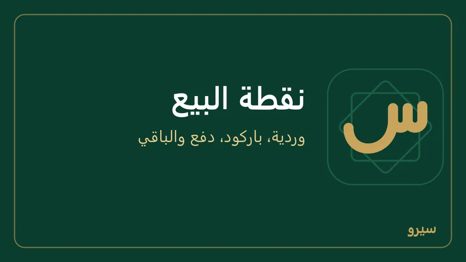
- زبون أعاد بضاعة: مرتجع من نقطة البيع تحت الفاتورة، لمن منحه المالك هذه الصلاحية من المستخدمين؛ ومن لم يُمنحها يرى مكانه «المرتجع من نقطة البيع يحتاج صلاحية يمنحها المالك من «المستخدمون»». اكتب رقم الفاتورة (فواتير الوردية في القائمة) واضغط عرض، ثم الكمية التي تعود من كل صنف والسبب، ثم تسجيل المرتجع أو إرجاع كل المتبقي. وأنت تكتب الكميات يظهر «قيمة المرتجع …» ومن أين يُردّ، ويسألك بها قبل التسجيل. المبلغ يُردّ بالطريقة التي دُفعت بها الفاتورة، والنقد من صندوق الوردية: يظهر في تقرير الوردية سطراً وحده (المرتجعات والمردود نقداً) وينقص من المتوقع في الصندوق. المرتجع على وردية مفتوحة فقط، وقاعدة موافقة على المرتجعات تحجزه حتى يوافَق عليه.
- نقد تأخذه من الدرج أثناء الوردية: سحب من الصندوق في الشريط نفسه، مع السبب. رسالة خضراء أعلى الشاشة تقول كم سُحب، فلا تسحبه مرتين.
- أصوات البيع بجانب الفاتورة: صوت قصير حين يتم البيع، وصوت آخر حين يُرفض باركود لا يعرفه سيرو أو يُرفض الدفع. الماسح يصفر عند قراءة أي باركود، فهذا الصوت يقول لك إن الصنف لم يدخل الفاتورة دون أن تنظر إلى الشاشة. مطفأة في البداية، ويُحفظ الاختيار لهذا الجهاز وحده. لا يُسحب أكثر مما يُتوقع في الدرج، والسحب المسجَّل خطأً يُلغى من قيده في المحاسبة بسبب، فيعود إلى المتوقع. بعد إغلاق الوردية لا يُسجَّل عليها سحب ولا بيع، حتى من صفحة بقيت مفتوحة: افتح وردية جديدة.
- تقرير كل وردية (Z): ورديات سابقة في الشريط نفسه، ثم طباعة أو مشاركة في أعلى التقرير. المتوقع والفرق يبقيان كما كانا عند الإغلاق، ولو اعتُمدت بعده فاتورة منها كانت بانتظار الموافقة.
- الكمية تُكتب في خانتها بجانب الصنف (1.5 كيلو)، أو اكتب المبلغ في الخانة التي بعدها لتبيع بالمبلغ («بعشرة آلاف زيت»): تُحسب الكمية وحدها، المبلغ ÷ السعر.
- صنف كميته في الفاتورة أكثر مما في المستودع يظهر تحته «المتوفر 3 فقط» بالأحمر، والبيع يتم.
- زبون جديد يريد نقاطاً أو يأخذ على الحساب: اختر + زبون جديد… في قائمة الزبون (تحت زبون عابر)، واكتب اسم الزبون الجديد ثم أضف، فيُختار للفاتورة. لمن يفتح العملاء والموردون؛ الكاشير يطلب ذلك من المالك. ولا أصناف بعد؟ مكان البطاقات «لا يوجد أصناف بعد» مع أضف صنفاً.
- التسعيرة تحت الزبون تبيع الفاتورة كلها بسعر الجملة أو الموزع (قوائم الأسعار)، وبطاقات الأصناف تُظهر أسعارها.
- تابلت على شبكة المحل فقد الاتصال؟ بعد 30 ثانية بلا جواب يظهر «لم يصل جواب الدفع خلال 30 ثانية…». لا تغيّر الفاتورة واضغط زر الدفع مرة أخرى حين يعود الاتصال: إن كانت قد سُجّلت تظهر «تمت فاتورة …» برقمها نفسه، ولا تُسجَّل مرتين.
لا تظهر خانة شام كاش أو سيرياتيل كاش؟ أضفها من طرق الدفع.
على الجوال: الوردية من مجموعة نقطة البيع والعروض تفتح الوردية وتسحب من الصندوق وتغلقها بالنقد المعدود، وتشارك تقرير الوردية (Z)، ومنها مرتجع من نقطة البيع لمن مُنح الصلاحية (ومن لم يُمنحها يرى الجملة نفسها التي على الكمبيوتر): اختر الفاتورة واكتب الكمية والسبب ثم حفظ المرتجع. البيع نفسه من بيع بالكاميرا: امسح الباركود (يصفر الجوال ويهتز قليلاً عند قراءته، فتعرف أنه أُخذ دون النظر إلى الشاشة)، أو اضغط ابحث عن صنف بالاسم واكتب اسم الصنف أو مجموعته أو رمزه. اضغط سطراً لتبيع بالمبلغ: اكتب مبلغ فتُحسب الكمية وحدها، المبلغ ÷ السعر. زبون، تسعيرة، نقاط، بطاقة هدية لاختيار زبون بأسعاره ونقاطه أو التسعيرة أو إدخال رمز بطاقة. اكتب ما أعطاك الزبون في المدفوع نقداً فيظهر الباقي، ثم دفع نقدي أو دفع بـ شام كاش أو البطاقة. لتقسيم الفاتورة اضغط دفع مجزّأ واكتب ما يُدفع بكل طريقة (صندوق الدولار بالدولار؛ بلا سعر اليوم تقول خانته «لا سعر صرف اليوم؛ يُدخله المالك أو المحاسب من «المحاسبة» ← «أسعار الصرف»»)، فيأخذ الدرج المتبقي نقداً. تعليق يحفظ الفاتورة جانباً لتخدم زبوناً آخر، ومعلّقة تعيدها. بعد البيع مشاركة PDF أو طباعة أو نص. زر السمّاعة بجانب زبون، تسعيرة، نقاط، بطاقة هدية يشغّل أصوات البيع على هذا الجوال. إغلاق الوردية يسأل مرة بالمبلغ المعدود قبل الإغلاق، ولمن يرى المتوقع يظهر الفرق تحت النقد المعدود فعلياً وفي السؤال. وتحت الرصيد الافتتاحي في الصندوق «أُغلقت آخر وردية بنقد معدود …» كما على الكمبيوتر. ورجوع من الفاتورة وفيها أصناف (أو فاتورة معلّقة) يسأل قبل أن تضيع: ابقَ أو اخرج دون حفظ. ما ليس له صنف: صنف غير مسجّل تحت البحث، اكتب ما تبيعه وسعره ثم إضافة. وتعليق يحفظ البيعة مع زبونها وتسعيرتها على الجوال، فتبقى ولو خرجت من الشاشة، واضغط معلّقة لتعود إليها.
بيع شيء ليس له صنف
- في نقطة البيع: اضغط + صنف غير مسجّل تحت مربع البحث، واكتب ما تبيعه وسعره، فيدخل الفاتورة كأي صنف.
- في فاتورة البيع: اختر عمل حسب الطلب (اكتب الوصف) واكتب الوصف والسعر (أو اكتب الوصف في الصنف واختر «عمل حسب الطلب «الوصف»» تحت ما يطابقه، فيُكتب الوصف وحده) (على الجوال زر عمل حسب الطلب في فاتورة بيع، وصنف غير مسجّل في بيع بالكاميرا). التفاصيل في العمل حسب الطلب.
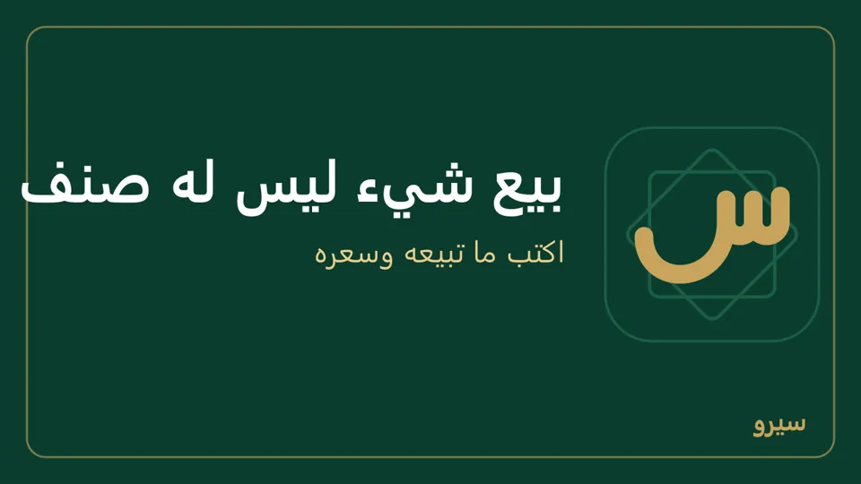
- تبيعه كثيراً؟ أضفه صنفاً من الأصناف ليظهر في القائمة وفي التقارير باسمه.
عرض سعر وطلب بيع
- من المبيعات اختر عرض سعر ثم + عرض سعر جديد: زبون وأصناف وأسعار كالفاتورة، ومجموعه بالضريبة والعروض الترويجية كما سيصير في الفاتورة، ولا يخرج شيء من المخزون.
- وافق الزبون؟ افتح العرض واضغط تحويل إلى طلب بيع، ثم عند التسليم تحويل إلى فاتورة بيع. تُنقل الأسطر كما هي، ويبقى الأصل مرتبطاً بها. قبل التحويل يظهر ما سيصدر، مثل «فاتورة بيع بتاريخ اليوم بمبلغ … على الحساب» (بسعر صرف اليوم وضريبته)، ويسألك به.
- لم يتم الاتفاق؟ اكتب سبب الإلغاء واضغط إلغاء المستند، فيسألك قبل أن يُلغى نهائياً.
- عربون على طلب البيع: في الطلب المفتوح اكتب المبلغ تحت عربون واضغط قبض العربون (على الجوال: قبض العربون في الطلب نفسه). يُسجَّل سند قبض على حساب الزبون، ولا يسدّد فواتيره القديمة: يُخصم من فاتورة هذا الطلب حين يتحوّل، وما زاد عنها يبقى للزبون. وإن أُلغي الطلب يبقى المبلغ له كله، ويذكّرك سؤال الإلغاء بذلك. بعد القبض يظهر أعلى الطلب رقم السند ومبلغه واسم الزبون.
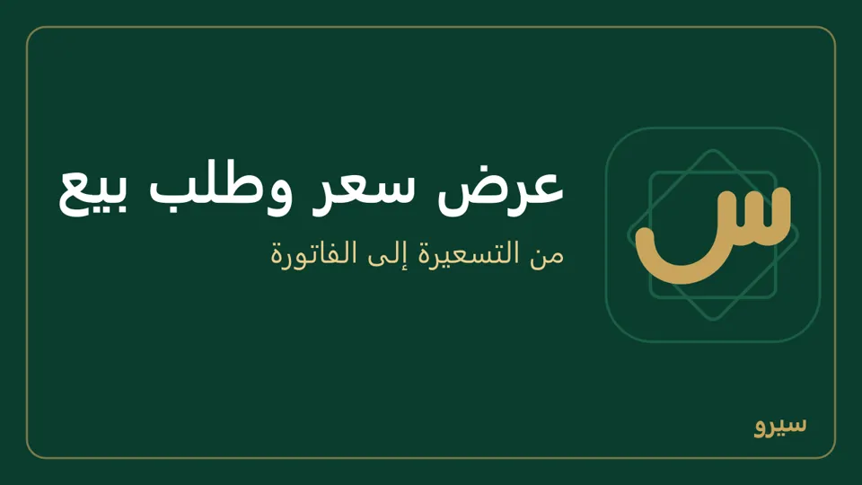
على الجوال: عروض وطلبات من مجموعة البيع والزبائن: عرض جديد أو طلب جديد، واضغط أيّاً منها لتحوّله أو تلغيه (بعد كتابة السبب) أو ترسله PDF على واتساب أو تطبعه. تحويل إلى فاتورة بيع يقول أولاً تاريخها ومبلغها ثم يسألك.
الخصم والعروض الترويجية
- خصم على فاتورة: اكتب المبلغ في خانة خصم، أو اختر % بجانبها (على الجوال تحتها) واكتب النسبة من مجموع الأسطر. يُطرح قبل الضريبة، ويُقيَّد في حساب الخصومات المسموحة فيبقى رقم المبيعات صحيحاً.
- عرض ترويجي (للمالك): من العروض أضف «اشترِ 3 واحصل على 1 مجاناً» أو «خصم 10% على صنف»، بمدة أو بلا مدة. على الصنف نفسه تكون كل مجموعة 3 + 1: أربع قطع فيها واحدة مجانية، وثماني قطع فيها اثنتان. يُطبَّق وحده على كل فاتورة بيع ونقطة بيع، ويُكتب اسمه على الفاتورة. عرضان على صنف واحد لا يجتمعان؛ الأكبر يُطبَّق. بجانب كل عرض في القائمة حاله: «يعمل الآن» أو «يبدأ …» أو «انتهى» أو «موقوف».
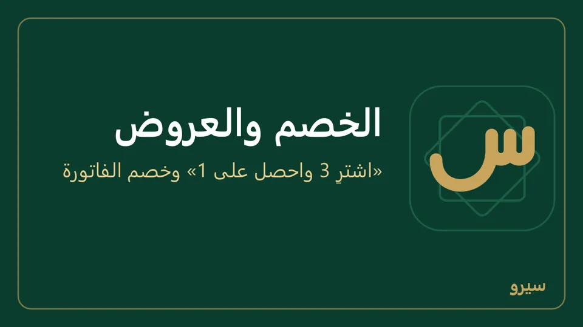
على الجوال: العروض الترويجية من مجموعة نقطة البيع والعروض، والخصم في أسفل فاتورة البيع. للمالك فقط إضافة العروض وإيقافها. العرض الجديد يأخذ من وإلى: فارغ «من» يبدأ الآن، وفارغ «إلى» بلا نهاية.
قوائم الأسعار: أسعار الجملة والموزع
سعر البيع في الصنف هو سعر المستهلك، ويظهر في التسعيرة باسم مستهلك (سعر البيع). لكل سعر آخر قائمة: «جملة» و«مفرّق» و«موزع» مثلاً.
- المالك يفتح قوائم الأسعار (غيره يرى الأسعار ولا يعدّلها: «سعر القائمة يضعه المالك»، وبلا قائمة «قوائم الأسعار يضعها المالك»). إنشاء مستويات جملة ومفرّق ينشئ القائمتين بضغطة، ثم اكتب لكل صنف سعره فيهما. أو أنشئ قائمة باسمك وبنسبة خصم من سعر البيع.
- اربط الزبون بها: من صفحته قائمة الأسعار، أو من القائمة نفسها: أضف زبوناً إلى القائمة (على الكمبيوتر ثم إضافة)، و× بجانب اسمه يعيده إلى الأسعار الأساسية.
- حين تختار هذا الزبون في فاتورة أو نقطة بيع تظهر أسعار قائمته وحدها.
- لفاتورة واحدة بسعر آخر (زبون نقدي بسعر الجملة، أو زبون يشتري مرة بالمفرق): اختر من التسعيرة فتتغير أسعار كل الأسطر. مستهلك (سعر البيع) يعيدها إلى سعر المستهلك.
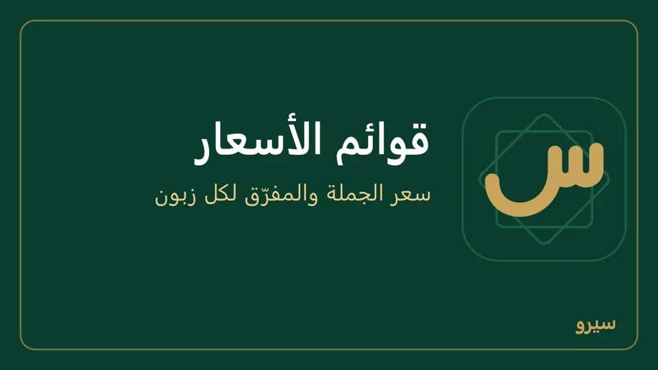
- لا تريد الجملة والمفرّق؟ افتح القائمة واضغط حذف القائمة أسفلها: تذهب أسعارها، ويعود زبائنها إلى سعر البيع. حين لا تبقى أي قائمة تختفي التسعيرة من الفاتورة ونقطة البيع، على الكمبيوتر والجوال. للمالك فقط.
- لصنف مسعّر بالدولار يُكتب سعر القائمة بالدولار أيضاً، ويُباع بالليرة بسعر صرف اليوم.
- ليبيع الكاشير أو المندوب بسعر المستوى وحده: من المستخدمون ← الحقول الحساسة علّم تعديل أسعار البيع لدوره. يختار المستوى من التسعيرة ولا يغيّر السعر، على الكمبيوتر والجوال. ولا يغيّر سعر البيع في الأصناف ولا سعر وحدة ولا باستيراد Excel، والصنف الجديد يضيفه بلا سعر: يضعه المالك.
على الجوال: قوائم الأسعار من مجموعة نقطة البيع والعروض بالخطوات نفسها (وأضف زبوناً إلى القائمة يربط الزبون فوراً، أو المستحقات ← شروط البيع لزبون). التسعيرة في فاتورة بيع وفي بيع بالكاميرا، والسعر يُكتب بجانب الكمية في كل سطر لمن يُسمح له بتعديله.
بيع بالدولار: أسعار الأصناف بالدولار
محل يشتري بالدولار ويسعّر بالدولار ويبيع بالليرة: اكتب سعر الصنف بالدولار مرة واحدة، فيُباع بالليرة بسعر صرف اليوم، ولا تعيد كتابة الأسعار كلما تغيّر الصرف.
- اكتب سعر الصرف كل صباح: الإعدادات ← التوطين ← أسعار الصرف. (العملات المستعملة يجب أن تضم الدولار.)
- في الأصناف ← صنف جديد اكتب سعر البيع بالدولار (12.5 مثلاً)، ومن خيارات متقدمة اختر عملة السعر: دولار أمريكي (USD). لصنف موجود: تعديل بجانبه، وأسعار وحداته تنتقل معه بسعر صرف اليوم.
- بِع كالعادة: نقطة البيع وفاتورة البيع وبيع بالكاميرا والمطعم والفوترة المجدولة تحسب السعر بالليرة: 12.5 $ × سعر اليوم، مقرّباً إلى القرش. الخصم والعروض وقوائم الأسعار تُطبَّق فوقه.
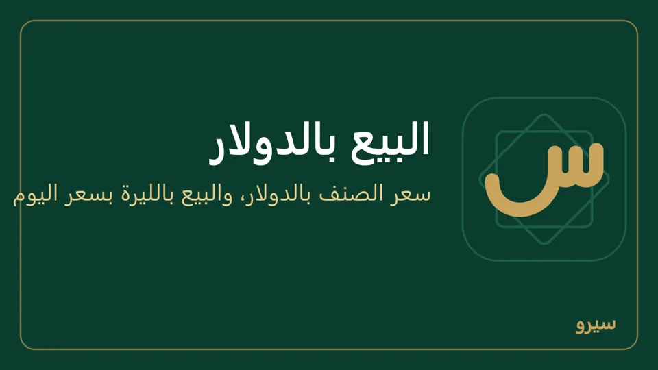
- قائمة الأصناف تُظهر السعر بالدولار، وتحته ما يساويه بالليرة اليوم.
- فاتورة بعملة دولار أمريكي (USD) تأخذ سعر الصنف المسعّر بالدولار كما هو، وتحوّل سعر الصنف المسعّر بالليرة إلى الدولار بسعر صرف اليوم أو بما تكتبه في سعر الصرف، مقرّباً إلى السنت. تغيير العملة أو سعر الصرف يعيد تسعير الأسطر، وسطر لا سعر صرف له يبقى سعره فارغاً حتى تكتب سعر الصرف.
- آجل: يظهر رصيد الزبون بالدولار في صفحته وكشف حسابه (كيف). نقدي: تدخل الدولارات صندوق الدولار إن كان عندك، وإلا صندوق الليرة بما تساويه.
- إن لم يُكتب سعر صرف لليوم نفسه يرفض البرنامج بيع الصنف المسعّر بالدولار ويقول لك: «لا سعر صرف لـ USD اليوم؛ أدخل سعر صرف اليوم ثم بِع». لا يأخذ سعر الأمس وحده. الأصناف المسعّرة بالليرة تُباع كالعادة.
- التكلفة تُحفظ بالليرة (متوسط ما اشتريت)، والدفاتر والأرباح بالليرة. صنف جديد تكلفته بالدولار؟ اختر الدولار بجانب التكلفة (عملة التكلفة على الجوال) فتُحوَّل بسعر صرف اليوم. وفاتورة الشراء بعملة دولار أمريكي (USD) تُحوَّل بسعر صرفها. تكلفة دولارات تُكتب على أنها ليرات تُخرج الربح خطأ.
- في ملف Excel للأصناف عمود عملة السعر: USD لصنف بالدولار، وفارغ للعملة الأساسية، وعمود عملة التكلفة لتكلفته (كيف).
على الجوال: سعر الصرف من المحاسبة ← أسعار الصرف أو الصندوق ← سعر دولار أمريكي اليوم، وسعر الصنف من الأصناف ← الصنف (أو جديد) ← عملة السعر. فاتورة بالدولار (فيبقى الدين على الزبون بالدولار): في فاتورة بيع اختر العملة: USD، واكتب سعر USD بعملة الدفاتر (SYP) إن كانت الخانة فارغة، فيُحفظ سعرَ صرف اليوم. الأصناف المسعّرة بالدولار تُكتب بسعرها والمسعّرة بالليرة تُحوَّل بالسعر الذي كتبته، والإجمالي بالدولار وتحته ما يساويه بالليرة. سطر يحتاج سعر صرف لم يُكتب يظهر عليه «لا سعر صرف اليوم» ولا تُحفظ الفاتورة حتى تكتبه.
نقاط الولاء وبطاقات الهدايا
- النقاط: من الإعدادات ← الولاء حدّد نقطة لكل كم ليرة وقيمة النقطة عند الاستبدال (صفر يوقفها). فوق الخانات مثال: «فاتورة بـ 100,000 تكسب … نقطة قيمتها …»، فترى ما تعطيه فعلاً. الزبون المسمّى يكسب نقاطاً على كل فاتورة، ويستبدلها خصماً في نقطة البيع.
- بطاقة هدية: من الإعدادات ← الولاء اضغط إصدار بطاقة (قبض نقدي) بقيمتها، فيظهر رمز البطاقة وبجانبه مشاركة ترسله به للزبون. تنتهي في (اختياري) لا يقبل يوماً مضى. يدخل المبلغ الصندوق ويبقى ديناً للزبون حتى يصرفها. تُصرف بكتابة رمزها في نقطة البيع أو في فاتورة البيع، ويُخصم منها ما يُستعمل فقط. في نقطة البيع يظهر رصيدها بجانب الرمز وأنت تكتبه، أو «بطاقة الهدية غير موجودة أو غير صالحة».
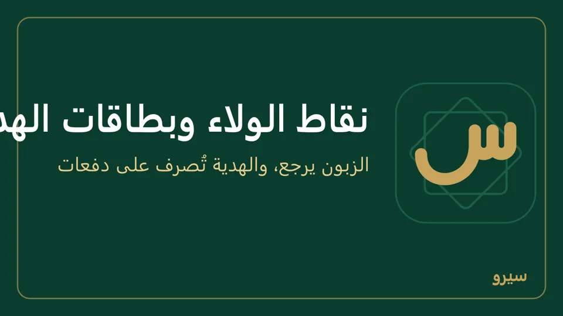
- إلغاء بطاقة (للمالك): اكتب سبب الإلغاء بجانبها واضغط إلغاء وردّ الرصيد، فيسألك بالمبلغ الذي سيُردّ: يُردّ ما بقي فيها للزبون نقداً من الصندوق، ويخرج من دين البطاقات، والسبب في سجل التدقيق. البطاقة الملغاة لا تُصرف بعدها.
على الجوال: الولاء وبطاقات الهدايا من مجموعة نقطة البيع والعروض (أو من بيانات المحل) لضبط النقاط وإصدار بطاقة وإرسالها PDF أو طباعتها، ولإلغائها: سبب إلغاء بطاقة ثم إلغاء بجانبها، فيسألك بما سيُردّ نقداً (إلغاء البطاقة)، وفي بيع بالكاميرا تُستبدل النقاط ويُكتب رمز البطاقة.
سقف الدين وتاريخ الاستحقاق
- من صفحة الزبون: أيام السداد (بعدها تستحق الفاتورة الآجلة) وسقف الائتمان (يرفض البرنامج فاتورة آجلة تتجاوزه، ويقول: «اقبض المبلغ أو جزءاً منه الآن، أو اطلب من المالك أو المحاسب رفع «سقف الائتمان» في بطاقة الزبون»). يُحسب على السقف ما يبقى على حسابه فقط: ما دُفع عند الحفظ أو ببطاقة هدية لا يُحسب.
- لفاتورة بعينها اكتب الاستحقاق في نموذجها. تظهر الخانة بعد اختيار الزبون أو المورد، واستحقاق قبل تاريخ الفاتورة يُرفض.
- في الفاتورة يظهر بجانب رصيد الزبون «السقف … · المتاح …» (كيف).
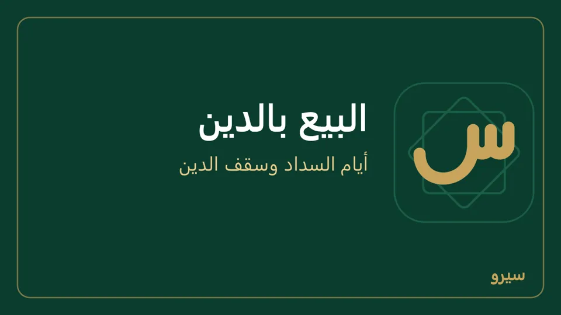
- الرئيسية تُظهر الاستحقاقات: المتأخر عند الزبائن وما يستحق خلال أسبوع، ولك وعليك. وصفحة الزبون تعرض دينه موزّعاً على أعماره (0-30 يوماً حتى أكثر من 90).
على الجوال: المستحقات من مجموعة البيع والزبائن فيها المتأخر والقريب، ومن تأخر من الزبائن، وشروط البيع لزبون لأيام السداد والسقف وقائمة الأسعار (للمالك والمحاسب). وفي فاتورة بيع يظهر تحت الزبون «السقف … · المتاح …»، بالأحمر إن كانت الفاتورة الآجلة تتجاوزه. وصفحة الزبون تعرض أعمار ما عليه (0-30 يوم، 31-60، 61-90، أكثر من 90 يوم) ونقاط الولاء.
الفوترة المجدولة: فواتير أو كشوف حساب كل أسبوع أو كل شهر
لزبائن يأخذون الشيء نفسه بانتظام (مياه، اشتراك، توصيل أسبوعي): تُصدَر فاتورة لكل واحد منهم وحدها في اليوم الذي تختاره، ثم ترسلها له بضغطة.
- من الفوترة المجدولة اضغط جدولة جديدة: اسم، كل أسبوع ويوم الأسبوع أو كل شهر ويوم من 1 إلى 28، والأصناف بكمياتها. اترك السعر فارغاً فيأخذ كل زبون سعره (قائمة أسعاره إن كان عليها)، أو اكتب سعراً واحداً للجميع.
- اختر الزبائن: زبائن أختارهم، أو كل الزبائن، أو زبائن منطقة إن كانت عندك مناطق للمندوبين. الفاتورة على حساب الزبون، إلا إن علّمت مدفوعة نقداً. تحت الخانات يظهر أول تشغيل (أو التشغيل التالي) بتاريخه وعدد الزبائن، فتعرف متى تصدر أول فواتير ولكم زبوناً. لا زبائن بعد؟ تقول القائمة «لا زبائن بعد» مع رابط إلى العملاء والموردون (على الجوال زر الزبائن)، ولا أصناف بعد: «لا أصناف بعد» مع رابط إلى الأصناف.
- في اليوم المحدد تُصدَر الفواتير وحدها: على الكمبيوتر وهو يعمل، وعلى الجوال حين تفتحه (وتقول الشاشة الرئيسية «صدرت … فاتورة مجدولة»: اضغطها لتفتح التشغيل). إن كان مطفأً ذلك اليوم تُصدَر حين يعمل. تريدها الآن؟ أصدر فواتير اليوم الآن، فيسألك بعدد الفواتير التي تصدر بتاريخ اليوم وموعدها.
- افتح التشغيل من التشغيلات: بجانب كل زبون واتساب يفتح محادثته والفاتورة مكتوبة فيها، فتضغط إرسال في واتساب؛ وتيليغرام يفتح الرسالة وتختار المحادثة؛ وعلى الجوال مشاركة يرسل الفاتورة ملف PDF بشعار المحل إلى واتساب أو أي تطبيق، فتختار المحادثة وترسل. رابطا واتساب وتيليغرام يحملان النص فقط لأنهما لا يرفقان ملفاً. يُعلَّم الزبون «أُرسلت» حين تضغط.
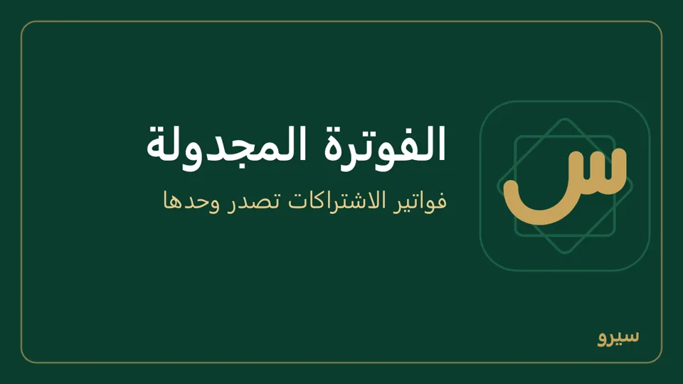
- كل فاتورة فاتورة بيع عادية: تمر على الموافقات وسقف الدين والضريبة والمندوب، وتُصحَّح مثل غيرها. زبون تجاوز سقفه لا تصدر فاتورته ويُكتب السبب عنده؛ صحّحه ثم أعد المحاولة، ومن صدرت فاتورته لا تتكرر.
- رقم الهاتف يُكتب كما تعرفه (0933…)، ويُضاف رمز الدولة وحده.
- تعمل الجدولة على الجهاز الذي أُنشئت عليه فقط، حتى لا تصدر الفواتير مرتين من جهازين. إن تغيّر الجهاز: افتح الجدولة من الجهاز الجديد واضغط اجعل هذا الجهاز يشغّلها.
- الإرسال مجاني لكنه بضغطة منك لكل زبون. الإرسال الآلي دون ضغط يحتاج خدمة واتساب للأعمال المدفوعة (WhatsApp Business API)، وسيرو لا يستعملها.
كشف حساب كل أسبوع أو كل شهر لزبائن يأخذون على الحساب طوال الشهر: بدل فاتورة بالأصناف، يُجهَّز لكل زبون كشف حسابه، فيه فواتيره بأصنافها ودفعاته ورصيده، لترسله له.
- في جدولة جديدة اختر كشف حساب بدل فاتورة بالأصناف، ثم الاسم والتكرار واليوم والزبائن كما سبق. لا أصناف فيها. يُختار النوع عند إنشاء الجدولة ولا يتغيّر بعدها.
- في اليوم المحدد تُجهَّز الكشوف وحدها، أو اضغط جهّز كشوف اليوم الآن. كل كشف يبدأ من يوم التشغيل السابق وينتهي في اليوم الذي قبل التشغيل، فجدولة كل شهر يوم 1 تعطي الشهر الماضي كاملاً، وما يُسجَّل يوم التشغيل يدخل الكشف التالي.
- افتح التشغيل من التشغيلات: عند كل زبون رصيده، وواتساب يفتح محادثته والكشف مكتوب فيها بكل حركاته وتحته الخلاصة: الرصيد السابق، ومجموع المدين والدائن في الفترة، والمطلوب منك الآن. وتيليغرام كذلك. طباعة أو PDF يفتح الكشف كاملاً: اطبعه، أو اضغط حفظ PDF فيُحفظ ملفاً في التنزيلات ويُفتح مجلده لترفقه في واتساب أو تيليغرام. وعلى الجوال مشاركة يرسله ملف PDF. يُعلَّم الزبون «أُرسلت» حين تضغط.
- الكشف لا يُصدر شيئاً ولا يغيّر رصيداً، ويُقرأ من الحسابات حين تفتحه، فدفعة سُجّلت بعد التشغيل بتاريخ داخل الفترة تظهر فيه.
- زبون لا حركة له في الفترة ولا رصيد عليه لا يُجهَّز له كشف.
- كشف طويل جداً على رسالة واتساب يُكتب فيها مختصراً: رصيد أول المدة، ومجموع المدين والدائن في الفترة، والرصيد، والفواتير المفتوحة، والخلاصة. والكشف بكل حركاته من طباعة أو PDF أو مشاركة.
- يذكر الكشف الفواتير المحفوظة والدفعات. الطلب الذي لم يتحوّل إلى فاتورة (طلب بيع) لا يظهر فيه.
على الجوال: الفوترة المجدولة من مجموعة نقطة البيع والعروض، بكل ما سبق؛ واختيار الزبائن فيها أختارهم أو الكل أو منطقة، والنوع فاتورة بالأصناف أو كشف حساب.
الموافقات
- المالك يضع قاعدة في الموافقات تحت القواعد: نوع المستند ومن مبلغ ويوافق عليه، ثم إضافة قاعدة. في يوافق عليه «المالك» و«محاسب» وحدهما، لأنهما من يفتح الموافقات؛ دور آخر لا يرى المستند المعلّق ليوافق عليه.
- مستند يطابق القاعدة يُحفظ بانتظار الموافقة ولا يدخل الحسابات ولا المخزون، وأعلى صفحته «بانتظار الموافقة: لا يُرحَّل حتى يوافق صاحب الصلاحية» ومعه رابط الموافقات لمن يفتحها. أخطأت فيه قبل أن يوافَق عليه؟ افتحه، واكتب سبب الإلغاء أسفل صفحته واضغط إلغاء المستند: يُسحب طلب موافقته ولا يُرحَّل أبداً، ثم سجّل غيره.
- صاحب الدور يضغط موافقة فيُرحَّل، أو رفض فيُلغى. الرفض يحتاج سبباً في ملاحظة (الموافقة لا تحتاجها)، ويبقى في آخر الموافقات وفي السجل أسفل صفحة المستند. بعدها تقول الصفحة أي مستند «وُوفق عليه ورُحِّل» أو «رُفض وأُلغي» ومبلغه.
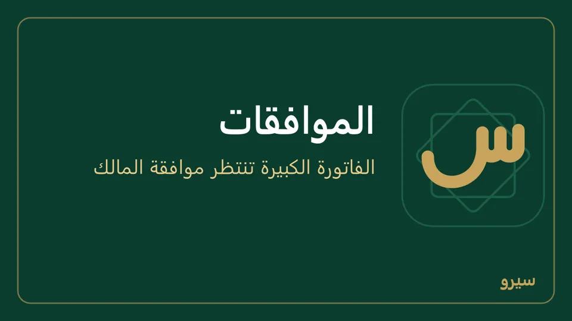
- الرفض (أو إلغاء المستند المعلّق) يعيد ما حجزه: رصيد بطاقة الهدية ونقاط الولاء المستبدلة، والعرض أو الطلب الذي حُوِّل منه يعود مفتوحاً، والرحلة التي أُغلقت بفاتورتها تعود مفتوحة. وحصة السائق تُسجَّل حين يوافَق على الفاتورة. وإلغاء المستند المعلّق يُغلق طلب موافقته فيختفي من الموافقات.
- تعديل فاتورة لا ينتظر الموافقة: إن طابقت الفاتورة المعدّلة قاعدة رفض البرنامج التعديل وبقيت الأصلية كما هي.
- حذف قاعدة يسألك أولاً: ما يطابقها بعد الحذف يُرحَّل فوراً بلا موافقة.
- قسم الموافقات لا يظهر؟ فعّله من الأقسام. وقواعد أدق (شرط، منع، تنبيه) في سير العمل.
على الجوال: الموافقات من مجموعة الإدارة: اضغط المستند لتراه، ثم موافقة أو رفض مع ملاحظة إن شئت. والمالك يضيف القواعد تحتها بالخانات نفسها.
تعديل فاتورة بعد حفظها
- افتح الفاتورة (من المبيعات أو المشتريات، أو بالبحث برقمها).
- اضغط تعديل: تُفتح معبّأة فتصحّح الأصناف والكميات والأسعار.
- طريقة الدفع والمدفوع الآن تبدأ كما دُفعت الأصلية، فغيّرها إن دُفعت الآن أو دُفع جزء منها (على الجوال: نقدي أو آجل والمدفوع الآن). فاتورة دُفعت بأكثر من طريقة تبقى دفعاتها كما هي.
- اكتب سبب التعديل واضغط حفظ. تبقى الأصلية في الدفاتر ملغاة بقيد عكسي عليه السبب، وتأخذ المعدّلة رقماً جديداً، وسندات القبض أو الدفع التي كانت عليها تنتقل إليها.
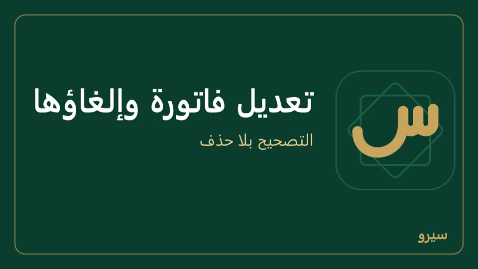
- المعدّلة تحتاج موافقة؟ لا يُحفظ التعديل وتبقى الأصلية كما هي. صحّح الفرق بمرتجع أو إشعار، أو ألغِ الفاتورة وسجّل غيرها فتنتظر الموافقة (والبيع خارج الحسابات حتى يوافَق عليها). حدّث كل الأجهزة: نسخة أقدم تحفظ التعديل بانتظار الموافقة وتُلغي الأصلية، فإن رُفض ضاع البيع من الحسابات.
- فاتورة في فترة مقفلة يُؤرَّخ تعديلها اليوم، وتبقى بضريبة الفاتورة الأصلية ولو تغيّرت النسبة بعدها.
- حُفظت بالليرة وهي بالدولار؟ غيّر العملة في التعديل، واترك سعر الصرف فارغاً فيُستعمل سعر يوم الفاتورة، أو اكتب غيره (على الجوال يظهر سعر ذلك اليوم مكتوباً). الأسعار تبقى كما كتبتها بالعملة الجديدة.
- إن كان على الفاتورة سند قبض أو دفع فلا تتغيّر عملتها ولا سعر صرفها ولا الزبون أو المورد: ألغِ السند أولاً ثم عدّل وسجّله من جديد.
- فاتورة الشراء يعدّلها من يرى أسعار الشراء: الدور الذي أخفى عنه المالك «أسعار الشراء» من الحقول الحساسة لا يرى تعديل على الكمبيوتر، ويظهر له السبب على الجوال.
لا يُعدَّل بهذه الطريقة: فاتورة عليها مرتجع أو إشعار، أو فاتورة نقطة البيع، أو مدفوعة ببطاقة هدية أو بنقاط، أو مدفوعة بأكثر من طريقة دفع. صحّحها بمرتجع أو بإشعار. الفاتورة المحفوظة لا تتغيّر مبالغها ولا تُحذف أبداً، والبرنامج نفسه يرفض ذلك.
على الجوال: فواتير البيع أو فواتير الشراء ← الفاتورة ← تعديل، ثم حفظ التعديل (كيف). فاتورة لا تُعدَّل يظهر سببها وتحته سجّل مرتجعاً، وتحت كل فاتورة مرحَّلة مرتجع وإشعار دائن أو مدين يفتحانها بنفسها، وفاتورة بانتظار الموافقة تُفتح لتراها ومن يوافق عليها.
نسخ فاتورة
افتح الفاتورة (أو عرض السعر، أو الطلب، بيعاً أو شراءً، ولو كانت ملغاة) واضغط نسخ أعلاها. تُفتح فاتورة جديدة من النوع نفسه بالزبون أو المورد نفسه والأصناف والكميات والأسعار نفسها، تعدّل فيها ما تريد ثم حفظ. الأصلية لا تتغيّر.
- الصنف المؤرشف والزبون المؤرشف لا يُنسخان، ورقم دفعة الصنف (تاريخ الانتهاء) يُكتب من جديد في فاتورة الشراء.
- على الجوال: افتح المستند واضغط نسخ.
إلغاء فاتورة
- افتح الفاتورة (من المبيعات أو المشتريات، أو بالبحث برقمها).
- اضغط إلغاء الفاتورة تحت رأس الفاتورة بجانب تعديل. أول ما يظهر رقم الفاتورة ومبلغها واسم الزبون أو المورد، فتتأكد أنها المقصودة. اقرأ ما سيحدث، اكتب سبب الإلغاء واضغط تأكيد إلغاء الفاتورة. إن كان لا يمكن إلغاؤها يقول لك الزر لماذا، وما تفعله بدلاً منه.
- تظهر عليها كلمة ملغاة، وتختفي من القائمة والأرصدة وكشف الحساب والاستحقاقات والتقارير والحركة اليومية. البضاعة تعود إلى المستودع (أو تخرج منه في فاتورة الشراء) بالتكلفة التي تحرّكت بها، وما دُفع عند الحفظ يخرج من الصندوق.
- لا يُحذف شيء: يبقى قيد الفاتورة وقيد عكسه في الدفاتر، ويُسجَّل الإلغاء وسببه في سجل التدقيق. في فترة مقفلة يُؤرَّخ قيد العكس بتاريخ اليوم، فتبقى الفترة المقفلة وتقريرها الضريبي كما هي.
- لرؤية الفواتير الملغاة اضغط إظهار الملغاة أعلى القائمة.
- عليها سند قبض أو دفع؟ يبقى ألغِ معها سند القبض (أو ألغِ معها سند الدفع) معلَّماً، فيُلغى السند مع الفاتورة: يُردّ المبلغ من الصندوق إلى الزبون (أو يعود من المورد إلى الصندوق). أزل العلامة إن أردت أن يبقى المبلغ، فيطلب منك إلغاء الفاتورة أن تتصرّف بالسند أولاً. السند الذي يسدّد فواتير أخرى معها يُلغى أولاً من كشف الحساب (إلغاء سند)، والفاتورة المسدّدة بشيك تُلغى بعد ارتجاع الشيك أو إلغائه. أما العربون الذي أخذته منه فيعود للزبون مع الإلغاء، ولا يلزم إلغاء سنده.
- فاتورة شراء بيع شيء من بضاعتها بعدها؟ سجّل مرتجع شراء بدل الإلغاء.
- فاتورة بانتظار الموافقة تُلغى بلا قيد، لأنها لم تُرحَّل بعد: اكتب سبب الإلغاء أسفل صفحتها واضغط إلغاء المستند.
لا تُلغى: فاتورة عليها مرتجع أو إشعار دائن أو مدين، أو فاتورة نقطة البيع، أو مدفوعة ببطاقة هدية أو بنقاط، أو مدفوعة بأكثر من طريقة دفع. صحّحها بـمرتجع.
على الجوال: في فواتير البيع أو فواتير الشراء افتح الفاتورة: تحت رأسها تعديل وإلغاء الفاتورة. اكتب سبب الإلغاء، ثم إلغاء الفاتورة وتأكيد الإلغاء. عليها سند قبض؟ مفتاح ألغِ معها سند القبض فوقها. وإن كان لا يمكن إلغاؤها يظهر السبب مكانها؛ وإن كان الحل مرتجعاً فاضغط السبب يُفتح مرتجع هذه الفاتورة.
إضافة زبون أو مورد
- افتح العملاء والموردون.
- اكتب الاسم، واختر النوع: زبون أو مورد أو زبون ومورد، واكتب الهاتف إن شئت.
- اضغط إضافة. تُفتح صفحة الاسم الجديد، ومنها رصيده السابق أو أول فاتورة له.
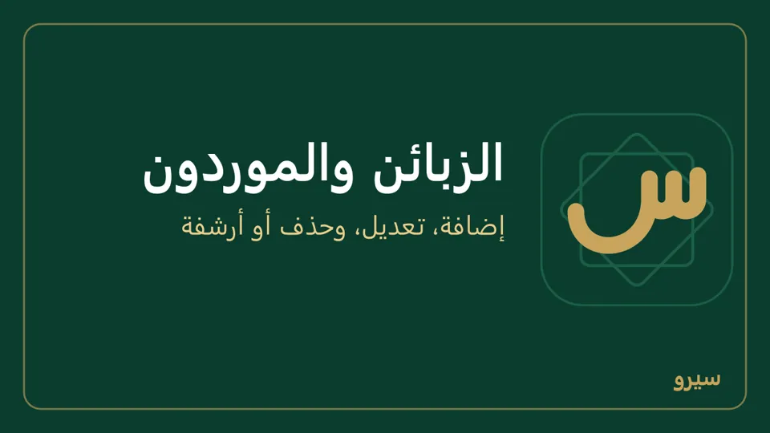
- اسم موجود لا يُضاف مرة ثانية (ولو اختلفت الهمزة أو المسافات): اختر الموجود، أو أضف إلى الاسم ما يميّزه («أم خالد - المزة»)، فلا ينقسم رصيد واحد على اسمين. الهاتف أرقام فقط (تُكتب بالأرقام العربية أو الهندية فتُحفظ لاتينية)، ويجوز + في أوله.
- أسرع وأنت تبيع: اكتب الاسم كاملاً في خانة الزبون في الفاتورة فيُضاف مع حفظها (فاتورة بيع).
- أسماء كثيرة دفعة واحدة: من Excel. وما بينك وبينه من قبل البرنامج: رصيد سابق.
على الجوال: الزبائن ← جديد: اسم الزبون والهاتف (اختياري)، ثم حفظ الزبون فتُفتح صفحته، وفيها فاتورة وقبض ودين عليه وكشف حساب. المورد من الموردون ← جديد ← حفظ المورد. ومن الفاتورة، ومن قبض من زبون ودفع لمورد والشيكات ومصروف وإعادة الطلب ومفاضلة الموردين والقيد اليدوي: اكتب الاسم في بحث القائمة واضغط إضافة (أو + بجانبها)، فيُضاف ويُختار.
تعديل زبون أو مورد
- افتح العملاء والموردون واضغط الاسم.
- اضغط تعديل الاسم أو الهاتف أو النوع، صحّح ما تريد واضغط حفظ.
- زبون صار يورّد لك أيضاً؟ اختر زبون ومورد: حساب واحد يجمع ما لك عليه وما له عليك، ويظهر في الفواتير والمشتريات معاً. في صفحته قبض من الزبون ودفع للمورد، كلٌّ بفواتيره المفتوحة، وكشف حسابه يذكر فواتير البيع والشراء المفتوحة معاً.
الفواتير والرصيد لا تتغيّر، تبقى على الاسم نفسه.
على الجوال: القلم بجانب الاسم في صفحة الزبون، أو في كشف حساب المورد من الموردون: الاسم والهاتف والنوع ثم حفظ.
حذف زبون أو مورد أو أرشفته
- افتح العملاء والموردون واضغط الاسم.
- في أسفل الصفحة اضغط حذف أو أرشفة، اقرأ ما سيحدث واضغط تأكيد الحذف أو تأكيد الأرشفة.
- اسم بلا فواتير ولا حركات يُحذف نهائياً، ويبقى أثر الحذف في سجل التدقيق.
- اسم له فواتير أو قبض أو دفع يُؤرشف ولا يُحذف: يختفي من القائمة ومن اختيار الزبون أو المورد في الفواتير ونقطة البيع والبحث وملف Excel، وتبقى فواتيره وكشف حسابه والتقارير كما هي.
لا يُؤرشف اسم رصيده غير صفر: اقبض منه أو ادفع له أولاً. لاستعادة اسم مؤرشف اضغط المؤرشفون في العملاء والموردون ثم استعادة، أو استورده من Excel باسمه فيعود.
على الجوال: القلم بجانب الاسم ثم حذف أو أرشفة، والمؤرشفون أعلى قائمة الزبائن أو الموردون.
مرتجع
- افتح الفاتورة الأصلية (من المبيعات أو بالبحث برقمها).
- في قسم مرتجع اكتب الكمية الراجعة لكل صنف، أو إرجاع كل المتبقي، واكتب السبب.
- اضغط تسجيل المرتجع. البضاعة تعود للمخزون، والمبلغ يُرد للزبون أو يُخصم من حسابه.
- وأنت تكتب الكميات يظهر تحتها «قيمة المرتجع …» بعد حصته من الخصم والضريبة، وأين يذهب: «تُخصم من رصيد الزبون» أو «تُردّ للزبون نقداً». تسجيل المرتجع وإرجاع كل المتبقي يسألانك بها قبل الحفظ.
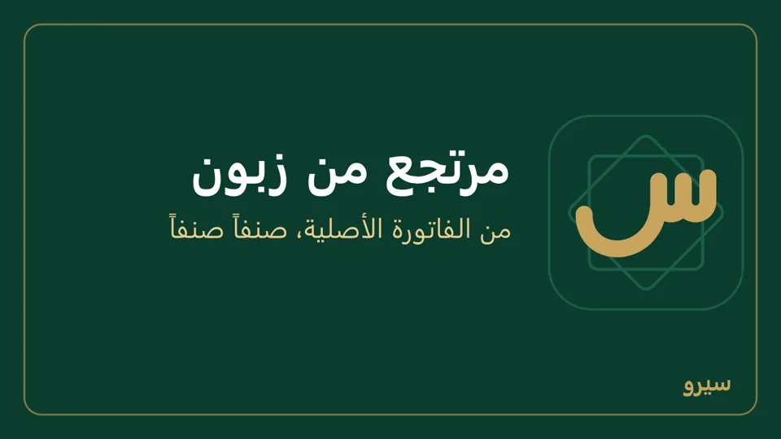
- المبلغ يعود بالطريقة التي دُفعت بها الفاتورة: من عهدة المندوب إن قبضها، ومن حساب البنك إن دُفعت ببطاقة، وما دُفع ببطاقة هدية يعود رصيداً على البطاقة نفسها. ونقاط الولاء التي كسبتها الفاتورة تُسحب بقدر ما رجع.
- بعد إشعار دائن على الفاتورة يرد المرتجع قيمتها بعد الإشعار، لا سعرها الأول، وتعود حصة الإشعار من «مردودات مبيعات» حيث وضعها الإشعار، لا من «خصومات مسموحة». وإشعار ينتظر الموافقة لا يدخل في سعر المرتجع: ما يُرجَع ينقص بقدره حتى يوافَق عليه أو يُرفض، فإرجاع كل المتبقي يُرفض حتى تقرّر فيه.
- المرتجع على دفعات: يأخذ كل مرتجع حصته من خصم الفاتورة وضريبتها وبطاقة الهدية وتقريب الصندوق، محسوبة مع ما سبقه، فيأخذ المرتجع الأخير ما بقي تماماً، ولا يبقى على الزبون ولا في الضريبة قرش من فاتورة رجعت كلها، بالليرة أو بالدولار.
- فاتورة نقطة البيع قُرّب نقدها: يرد الصندوق ما قبضه فعلاً، ويعود فرق التقريب معه. ودُفع جزء منها ببطاقة؟ تعود لكل طريقة حصتها مما أخذته، وإرجاع الفاتورة كلها يعيد لكل طريقة ما أخذته تماماً.
- فاتورة بالدولار دُفعت في صندوق الدولار: يخرج منه المرتجع الدولاراتِ نفسها بسعر الفاتورة، مهما تغيّر سعر اليوم.
- الفاتورة التي أُرجعت كلها تظهر «مُرجعة بالكامل» لا «مدفوعة»، وربحها ما بقي منها بعد المرتجعات. والمرتجع ليس دفعة: فاتورة آجلة أُرجع بعضها ولم يُقبض منها شيء تبقى «غير مدفوعة».
- صنف مجاني على الفاتورة (سعره صفر) يُرجَع وحده: يعود إلى المخزون ويخرج من تكلفة المبيعات.
- لا يُؤرَّخ المرتجع قبل يوم فاتورته. ومرتجع ينتظر الموافقة لا يعيد رصيداً إلى بطاقة الهدية حتى يوافَق عليه.
- مرتجع سُجّل خطأً؟ المرتجع المسجَّل لا يُلغى ولا يُعدَّل. صحّحه بـفاتورة بيع جديدة للزبون نفسه بالأصناف والكميات والأسعار التي رجعت خطأً: تخرج البضاعة من المخزون من جديد، ويعود المبلغ على حسابه أو تقبضه منه. واكتب في ملاحظاتها أنها تصحيح للمرتجع ورقمه. صفحة المرتجع تقول ذلك وبجانبه فاتورة بيع جديدة (وفي مرتجع الشراء فاتورة شراء جديدة من المورد نفسه)، وعلى الجوال يفتح السطر نفسه الفاتورة الجديدة. مرتجع ينتظر الموافقة يُرفض بدل ذلك.
كل مرتجع مربوط بفاتورته: لا يُرجَع أكثر مما بقي منها (والمرتجع الذي ينتظر موافقة يُحسب)، وضريبته ضريبة يوم الفاتورة. لذلك لا يوجد زر مرتجع جديد في قائمة المرتجعات.
على الجوال: مرتجع من مجموعة البيع والزبائن: اختر الفاتورة، اكتب الكمية أو إرجاع الكل فيظهر قيمة المرتجع، ثم حفظ المرتجع (مرتجع يُردّ نقداً يسألك بالمبلغ أولاً)، والتاريخ لمرتجع يوم سابق. والإرجاع للمورد: مرتجع شراء.
إشعار دائن أو مدين
تصحيح بالقيمة على فاتورة محفوظة، بلا حركة مخزون: خصم أعطيته بعد البيع، فرق سعر، أو أجور أضفتها.
- افتح الفاتورة، وفي قسم إشعار دائن أو مدين اختر النوع:
- إشعار دائن: يخفّض ما على الزبون. إشعار مدين: يزيده.
- في فاتورة شراء: إشعار مدين للمورد يخفّض ما علينا (خصم من المورد)، وإشعار دائن من المورد يزيده.
- اكتب المبلغ قبل الضريبة بعملة الفاتورة والسبب، ثم تسجيل الإشعار. يظهر قبل الحفظ ما سيتغيّر مع الضريبة («يُخفَّض ما على الزبون … مع الضريبة»)، ويسألك به.
- يأخذ ضريبة الفاتورة نفسها، وينزل من رصيدها أو يُضاف إليه، ولا يتجاوز الإشعار المخفّض ما بقي من الفاتورة. إشعار مدين ينتظر الموافقة لا يُحسب فيما بقي حتى يوافَق عليه.
- على فاتورة مدفوعة يُردّ المبلغ (أو يُقبض) بطريقة الدفع التي دُفعت بها: شام كاش أو البنك أو عهدة المندوب أو صندوق الدولار، لا من صندوق الليرة.
- لا يُؤرَّخ الإشعار قبل يوم فاتورته.
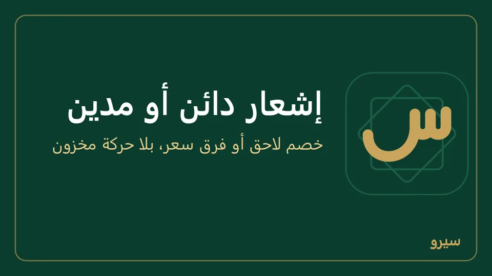
على الجوال: إشعار دائن أو مدين من مجموعة البيع والزبائن: اختر الفاتورة والنوع، والتاريخ لإشعار يوم سابق (فارغاً يعني اليوم). تحت المبلغ ما يصير عليه الحساب مع الضريبة قبل الحفظ.
دين بمبلغ، بلا أصناف
- افتح العملاء والموردون واضغط اسم الزبون.
- في دين عليه اكتب المبلغ، وفي على ماذا؟ ما أخذه إن شئت، ثم تسجيل.
- يُحفظ فاتورة آجلة بسطر واحد: تأخذ استحقاقها من أيام السداد، وتظهر في الاستحقاقات وكشف الحساب، وتُسدَّد بالقبض. تُصحَّح كأي فاتورة: تعديل أو مرتجع. وإن ضبطت ضريبة مبيعات فهي داخل المبلغ لا فوقه: يزيد دينه بما كتبت تماماً، وتظهر الضريبة في التقرير الضريبي.
- دين من قبل البرنامج (من الدفتر الورقي)، أو ما عليك لمورد من قبل: سجّله رصيداً سابقاً، فلا يُحسب مبيعاً. أما بضاعة جديدة من مورد فتُسجَّل بفاتورة شراء لتدخل المخزون.
على الجوال: اضغط الزبون في الزبائن ثم دين عليه: المبلغ الذي عليه وعلى ماذا؟ والتاريخ، ثم تسجيل الدين، ومشاركة PDF يرسل الفاتورة للزبون.
قبض من زبون
- افتح العملاء والموردون واضغط اسم الزبون.
- في قبض من الزبون اكتب المبلغ واضغط تسجيل. لتسديد فاتورة بعينها افتحها واستعمل قبض لهذه الفاتورة (ودفع لهذه الفاتورة لفاتورة شراء). فاتورة بالدولار ليس فيها هذا: تقول «فاتورة بعملة أجنبية: سجّل القبض من «قبض من الزبون» في صفحة الزبون» ومعها رابط الزبون، فهناك يُكتب سعر الصرف. يُسدَّد الأقدم أولاً، أو حدّد الفواتير بنفسك. قبضتها على شام كاش أو البطاقة؟ اختر ذلك من الصندوق قبل التسجيل. بعد التسجيل يظهر أعلى الصفحة رقم سند القبض ومبلغه والزبون، وقبض رُفض يبقى بما كتبته فتصحّحه.
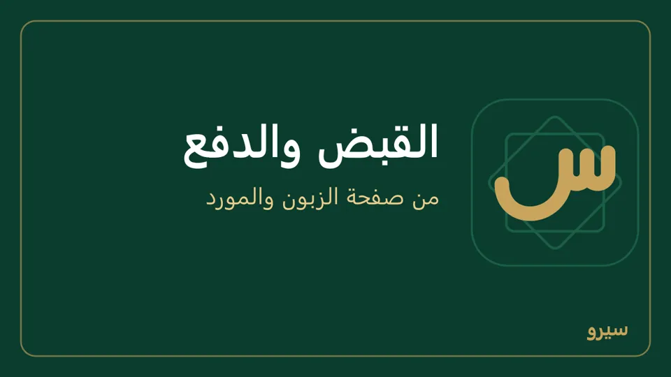
- دفع بشيك مؤجل؟ سجّله من الشيكات ← استلام شيك: يسدّد فواتيره بالطريقة نفسها، ويبقى ينتظر البنك حتى تحصّله (الشيكات المؤجلة).
على الجوال: قبض من زبون يسدّد الأقدم أولاً، وتحت المبلغ ما يبقى بعده («يبقى عليه …» أو «يُسدَّد حسابه كله»)، أو شغّل حدّد ما يُسدَّد من كل فاتورة واكتب لكل فاتورة ما يُسدَّد منها. التاريخ فارغاً يعني اليوم، وملاحظة (اختياري) تُطبع على السند. ثم مشاركة PDF يرسل سند القبض للزبون. ولكشفه: اضغط الزبون في الزبائن ثم كشف حساب (كيف). كل فاتورة في الكشف تذكر أصنافها، أو الوصف الذي كتبته للسطر الحر. زبون عليه فواتير بالدولار: اكتب سعر الدولار اليوم في خانته فوق المبلغ، ويُحفظ سعراً لليوم. ومن صفحة الفاتورة قبض لهذه الفاتورة يفتح القبض بها وبما بقي منها.
- فاتورة بالدولار؟ ما تكتبه في سعر الصرف اليوم يُحفظ سعراً لذلك اليوم، فيُحوَّل به صندوق الدولار والفاتورة معاً. للزبون فواتير بعملتين أجنبيتين؟ سجّل سعر كل عملة من الإعدادات ← التوطين واترك الخانة فارغة.
- عربون أو دفعة مقدّمة: ما يزيد في القبض عن الفواتير المفتوحة (أو قبضته ولا فاتورة عليه) يبقى للزبون، وتأخذه فواتيره الآجلة التالية وحدها، الأقدم أولاً، فتظهر مدفوعة ولا تأتي عنها تذكيرات تأخير. فاتورة بالدولار تأخذه بسعر صرفها.
سند قبض خاطئ؟ عدّله أو ألغِه. تردّ لزبون مبلغاً؟ سند صرف لزبون (ردّ مبلغ).
رصيد سابق مع زبون أو مورد
ما بينك وبين زبون أو مورد من قبل أن تبدأ بالبرنامج:
- افتح الاسم: على الكمبيوتر من العملاء والموردون، وعلى الجوال كشف حساب الزبون من الزبائن أو المورد من الموردون.
- في رصيد سابق من قبل البرنامج اختر لنا عليه أو له علينا، واكتب المبلغ، واختر العملة، ثم تسجيل الرصيد السابق.
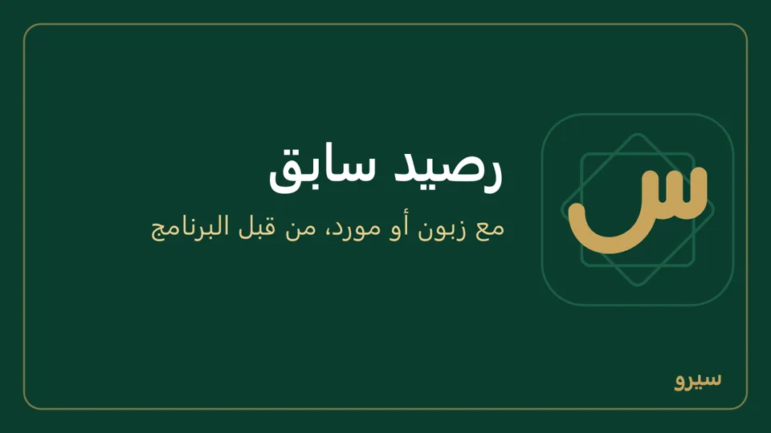
- رصيد بالدولار؟ اختر العملة: دولار أمريكي (USD). يبقى مفتوحاً بالدولار في صفحة الاسم وكشف حسابه، ويُسدَّد بالقبض أو الدفع بالدولار، ويُسجَّل في الدفاتر بالليرة بسعر صرف تاريخه، فاكتب سعر ذلك اليوم في أسعار الصرف أولاً. فرق الصرف عند السداد يدخل حساب «فروق صرف».
- يُسجَّل مرة واحدة لكل اسم، ثم يختفي القسم. يظهر للمالك والمحاسب فقط، لأنه قيد في الحسابات.
- الفواتير الجديدة تُضاف إليه، والقبض والدفع يسدّدانه. لأسماء كثيرة دفعة واحدة: الرصيد الافتتاحي في Excel.
بلا دفتر فواتير
من العمليات اليومية اختر بعت أو قبضت من زبون: مبلغ وزبون فقط، والبرنامج يقيّد الباقي.
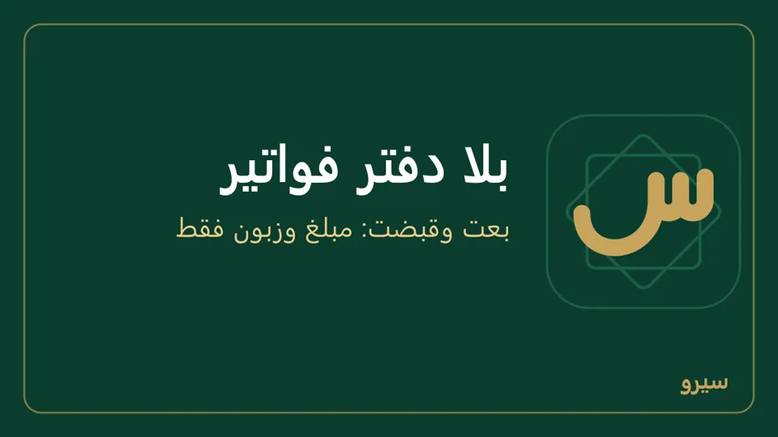
على الجوال: مصروف من الشاشة الرئيسية فيه أعلاه مصروف وبضاعة للبيع وبعت: مبلغ بلا أصناف، كالعمليات اليومية. ومعها قبض من زبون ودين بمبلغ من صفحة الزبون.
مبيعات يوم معيّن: الحركة اليومية
افتح ملخص اليوم من البيع والشراء في القائمة الجانبية. يظهر اليوم: ما بيع صنفاً صنفاً بكميته ومبلغه، ثم فواتير اليوم؛ اضغط فاتورة لتفتحها أو تطبعها أو ترسلها.
- يوم آخر: السهمان اليوم السابق واليوم التالي، أو اكتب التاريخ الذي تريده. العودة إلى اليوم يرجعك إلى اليوم.
- تحتها هذا الشهر لمن يرى التقارير، على الكمبيوتر والجوال: المبيعات بعد المرتجعات، الربح الإجمالي وصافي الربح، ما على الزبائن وللموردين، وقيمة المخزون.
- المالك والمحاسب يرون كل فواتير المحل، وغيرهما يرى الفواتير التي أصدرها هو، ويُكتب له تحت التاريخ «فواتيرك فقط». الجوال المرتبط بمحل يعرض يوم من دخل عليه.
- مبلغ الصنف قبل خصم الفاتورة، والمرتجعات لا تُطرح هنا؛ صافي المبيعات بعد المرتجعات في الرئيسية والتقارير.
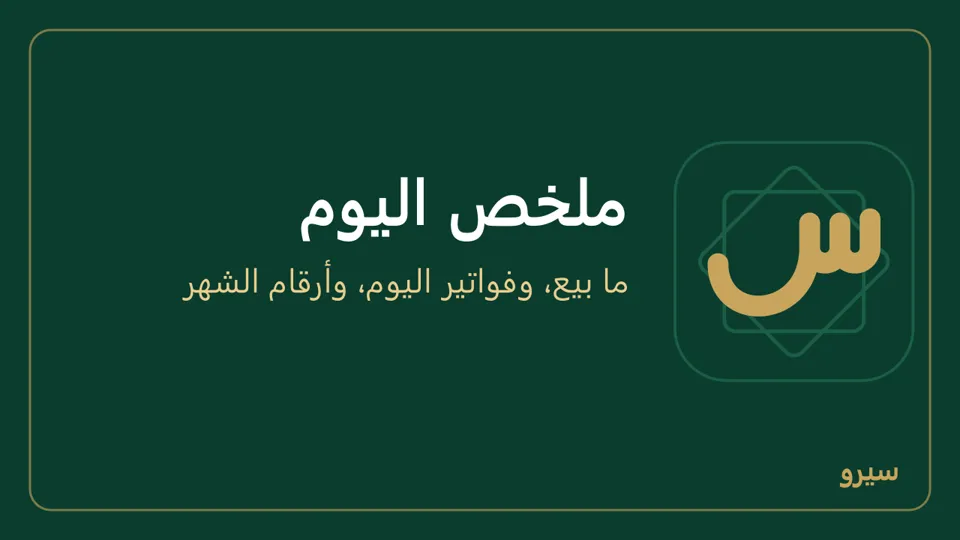
على الجوال: ملخص اليوم من مجموعة المال والتقارير، وفوقه أرقام ذلك اليوم: المبيعات والتحصيل والمصاريف وما بقي في الصندوق آخر اليوم.
المطعم: الطاولات والطلبات والمطبخ
فعّل المطعم من الأقسام أولاً.
- افتح المطعم (على الجوال: الصالة والطلبات) وأضف طاولاتك مرة واحدة من إضافة طاولة: اسم الطاولة أو رقمها («5» تظهر «طاولة 5»، و«طاولة الحديقة» كما هي) وعدد المقاعد من 1 إلى 50.
- اضغط الطاولة لتفتح طلبها، أو افتح طلب سفري أو توصيل باسم الزبون وعنوانه.
- اضغط كل طبق فيصل إلى شاشة المطبخ فوراً. اكتب ملاحظة للمطبخ (بدون بصل، حار) قبل الطبق لتُرسل معه.
- في المطبخ يضغط الطبّاخ جاهز على كل طبق، والطلب الذي ينتظر أكثر من ربع ساعة يظهر بالأحمر. تابلت أو جوال في المطبخ يكفي.
- للحساب: دفع نقدي (الكل أو المحدد) على الكمبيوتر، أو دفع الكل نقداً على الجوال. حدّد بعض الأسطر لتقسيم الفاتورة، ويبقى الباقي مفتوحاً على الطاولة.
- دمج طاولتين: من الطلب اختر الطلب الآخر في دمج في (اختر الطلب)، فيسألك قبل الدمج: تنتقل أطباقه إليه ويُغلق هذا الطلب، ولا يُفصلان بعدها (على الجوال دمج في طلب آخر ثم دمج).
- الدفع: يسألك بالمبلغ قبل أن يقبضه («دفع … نقداً؟»): مجموع الأسطر المحددة، أو الطلب كله. بعده يظهر رقم الفاتورة ومبلغها، وفي الدفع الجزئي «دُفع جزء من الطلب»، مع طباعة الإيصال.
- جاهز بالخطأ في المطبخ؟ الطبق ينتقل إلى جاهز قبل قليل أسفل الشاشة؛ تراجع بجانبه يعيده إلى الانتظار.
- حذف طبق أو إلغاء الطلب: × بجانب الطبق يحذفه، وإلغاء الطلب يحتاج سبب الإلغاء. الحذف والإلغاء والدمج يُكتب في سجل التدقيق بمن فعلها. الطلب المدفوع قبل أن تجهز أطباقه تبقى أطباقه في شاشة المطبخ حتى جاهز، والكاشير يعود بعد الدفع إلى الصالة مع طباعة الإيصال.
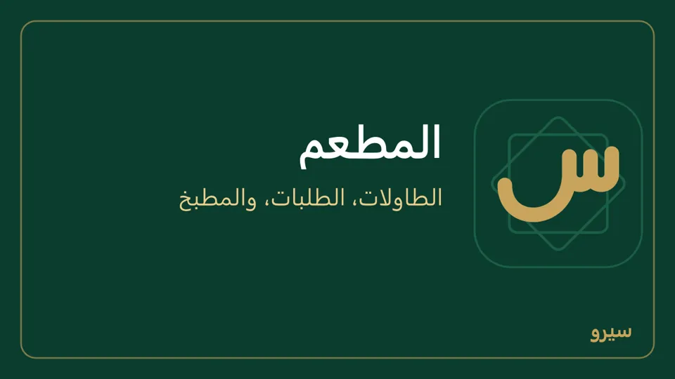
- الأطباق: علّم الطبق بلا مخزون وأنشئ له وصفة من التصنيع والتفكيك ← قوائم المواد (على الجوال التصنيع)، كما في منتج مؤلف من قطع، فتُخصم مكوّناته من المخزون بتكلفتها عند الدفع ويظهر ربح الطبق الحقيقي. طلب لا أطباق فيه بعد يقول «لا أطباق بعد» مع رابط إلى الأصناف (على الجوال زر الأصناف). الوصفة من التصنيع والتفكيك لمن يفتحه (المالك)، فالكاشير لا يرى سطر الوصفات تحت الطاولات.
الدفع يصير فاتورة على وردية الكاشير. طابعة الإيصالات على الكمبيوتر فقط.
على الجوال: مجموعة المطعم: الصالة والطلبات وشاشة المطبخ، بالخطوات نفسها والأسماء التي بين القوسين. حذف طبق ودمج طلب يسألان قبل أن يتمّا، والدفع يقول رقم فاتورته ومبلغها، وتحته مشاركة PDF وطباعة للإيصال. يفتح الجوال وردية وحده إن لم تكن مفتوحة.